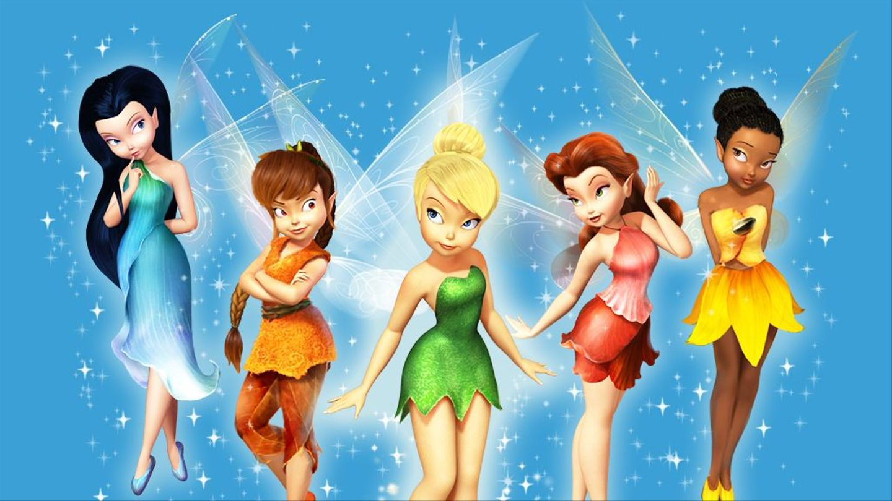
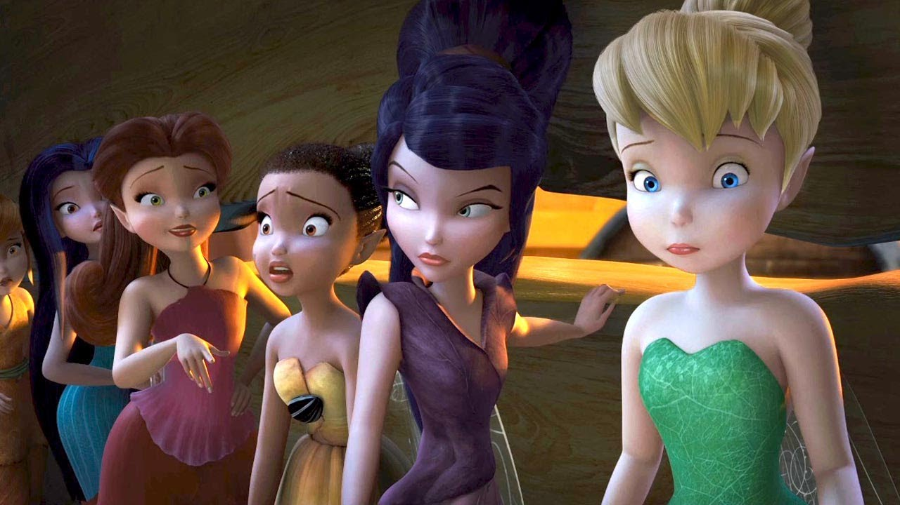
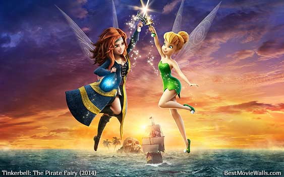
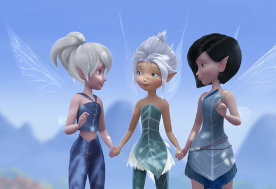
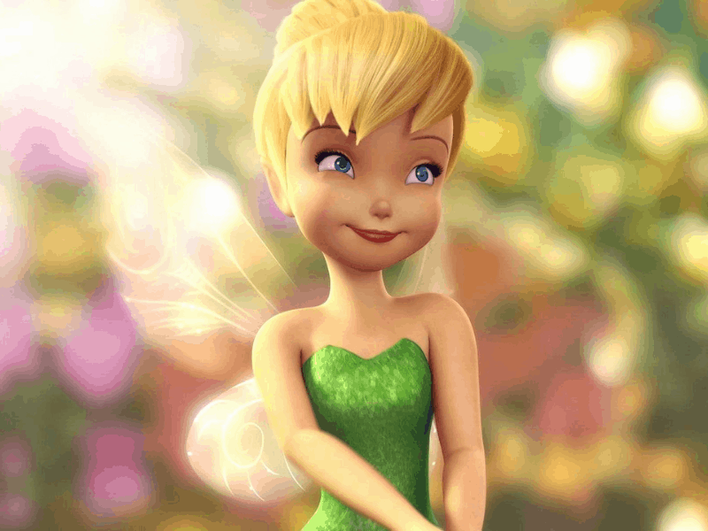
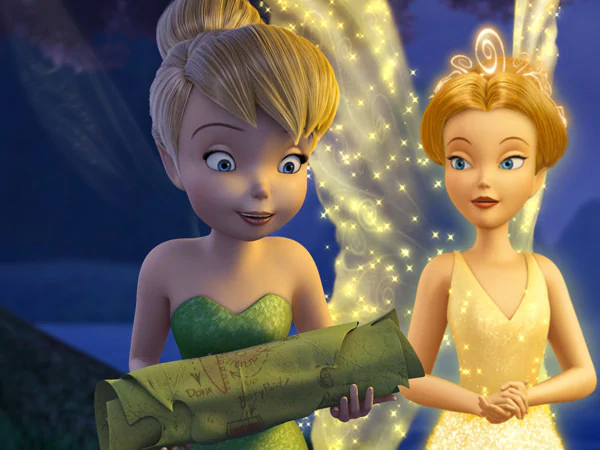

About Tinker Bell
Tinker Bell Friends - Disney Fairies
Tinker Bell is Tinker-talent fairy and she is playing the lead role in Tinker Bell sequel movies from 1 to 5. She is called Tink or Miss Bell by her friends.
Physical Appearance
- Warm Color
- Blonde Hair
- Blue Eyes
Traits
- She is cute
- She is sassy and feisty
- Sometimes stubborn and hot-tempered
Inventions
- Tint Spray
- Seed Catcher
- Balloon Carrier
Gallery




